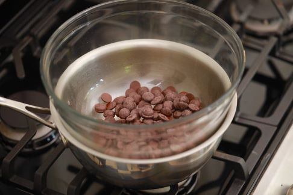
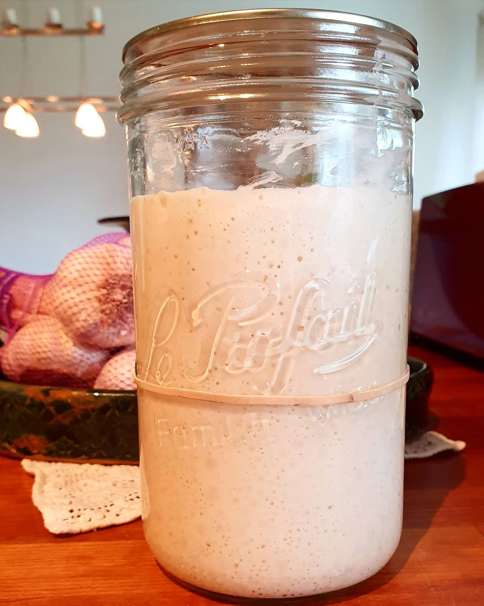

Bain marie - hot water bath

What is it and why use it?
When tempering eggs in a custard or melting chocolate you want the process to go slowly for the temperature
not to get too hot, or else your eggs will scramble and chocolate get burnt. You want to avoid this because
otherwise you will have to start over!
Don't worry though, you can easily lower the risk by not cooking directly in a pot, but instead fill your
pot with water and heat until a gentle simmer, and place what you're cooking in a bowl and place it over the
simmering water, so that the steam cooks your mixture. You want a tight fit, especially if melting
chocolate. This is because you want to prevent water steam from getting into your chocolate as that will
cause it to seize, ruining your chocolate.
Sourdough starter

Making a sourdough starter is easy - it's just about mixing flour with water - but sometimes it can still
be a bit tricky. Here are my answers to the most common questions:
How do I make a starter?
You mix equal amounts of water and flour by weight and feed it more water and flour each day for roughly a
week. Start small, with 10g, because you want to feed your starter at least 1:1:1 starter:flour:water, but
once it is more mature 1:2:2. This means that your starter will grow exponentially. After a few days you may
want to discard some of your starter to keep it from getting too big.
Is my starter ready?
Your starter is ready to bake with if it at least doubles, but preferrably triples in size after feeding.
This may take 10 hours.
What is that grey liquid floating on top?
If you don't want to feed your starter everyday, you may place it in the fridge and feed it once, weekly.
If left too long it may smell bad (vinegar and ethanol) and produce a gray-ish liquid that floats on top.
This is not dangerous! You can simply feed your starter and it will recover.